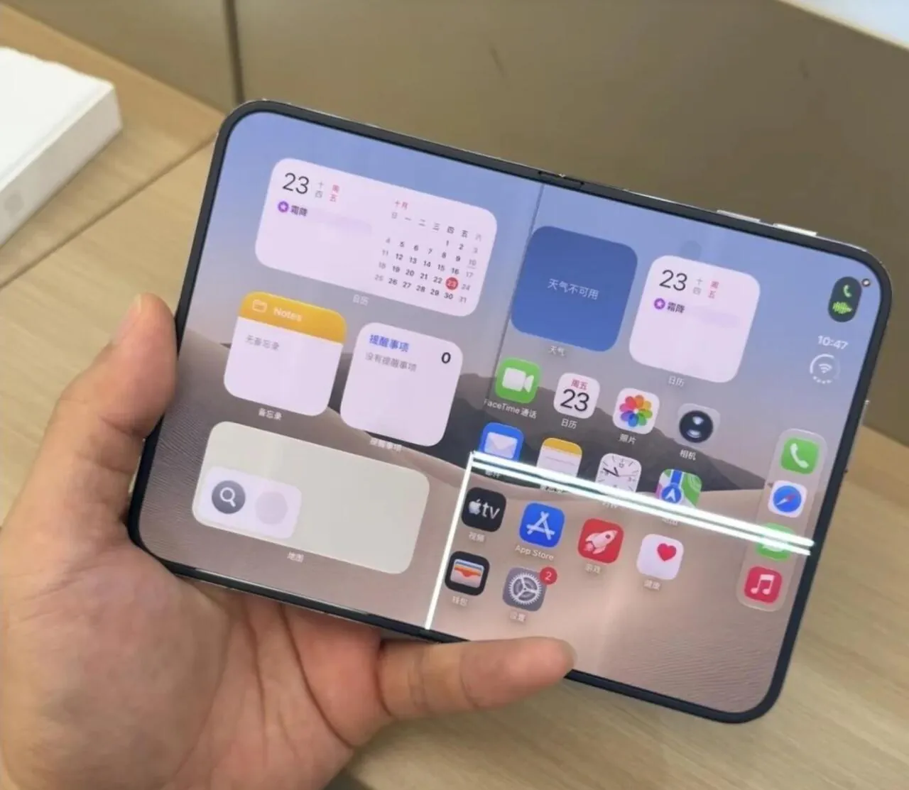
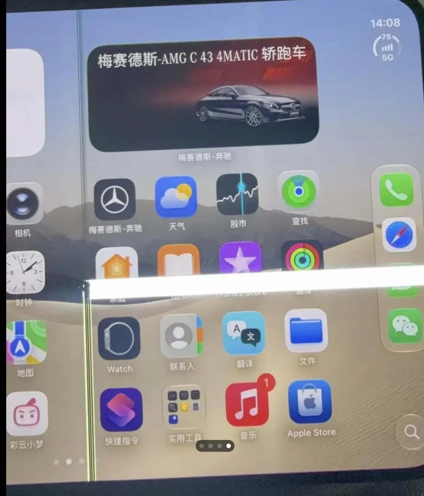

같은 부위 파손되는 문제 계속 나오는중
교환은 해주는데 오래 기다려야 한다고


같은 부위 파손되는 문제 계속 나오는중
교환은 해주는데 오래 기다려야 한다고
핸드폰 관상이 따~~~~악 그래보였어
생긴게 쎄했다니까?!
디스플레이는 다른 폴더블이랑 같은거 쓸텐데 힌지나 코팅 때문일까
힌지 가능성이 제일 큰거같음
그냥 1세대는 쓰는거 아녀 유튜버면 몰라도
애플도 1세대는 실험쥐니까 걸러야한다는 법칙을 못 이기는구나 ㅋㅋㅋ
빨리. 사전예약 취소 해? 12월 1일 까지 시간 좀 있긴 해
이걸 취소 안해?
왜 쓰레기통에 돈을 버리냐
취소 가즈아~~~
그냥 사라
다시 사즈아~~~
애플이 하면 다르다 어쩌구 저쩌구 ㅋㅋㅋㅋ
처음하는 거 1세대는 걸러라
설계문제네 저건
as거부까지해야완벽인데
힌지 차이인가?
삼성이 독을 풀었다
천하의 애플도 힌지구조는 어쩔 수 없구나
벌써 트라이폴드 나왔네 ㄷ
ㅋㅋㅋㅋㅋㅋㅋㅋㅋㅋㅋㅋㅋㅋㅋㅋㅋㅋ
역시 뭐든지 첫번째 제품은 사는거아닌듯 ㅋㅋㅋㅋㅋㅋㅋ 적어도 2, 3는 되어야 좀 안정화됨 ㅋㅋㅋ
뭐 3만번 접은후 주름 사진 같은거 나오지 않았나
벌써 븅신됐냐
디스플레이 삼성에서 뽑았다고
제품 QC 빌드를 삼성이 책임지는건가?ㅋㅋ
말이 되는소리를 좀 해라
삼성도 요즘 계속 똥볼차는거 븅신같은데 저게 주작이 아니면 아이폰 듀오는 걍 개좆병신이네 삼성 폴드 1세대때 저딴 문제는 없었지않나 짱폴더블도 저딴건 못본듯 이딴게 300? 애플이 만들면 다르긴하네
역시 1세대는 걸르는게 맞긴하네
저쪽 뒤 힌지가 뭔가잇나봄
삼성도 8세대까지 가면서 힌지 씹창문제 해결 안되서 똥볼 존나 차면서 올라왔는데 저건 얼마나 걸릴라나.
화면 3개 된건데 오히려 좋은거 아니냐?